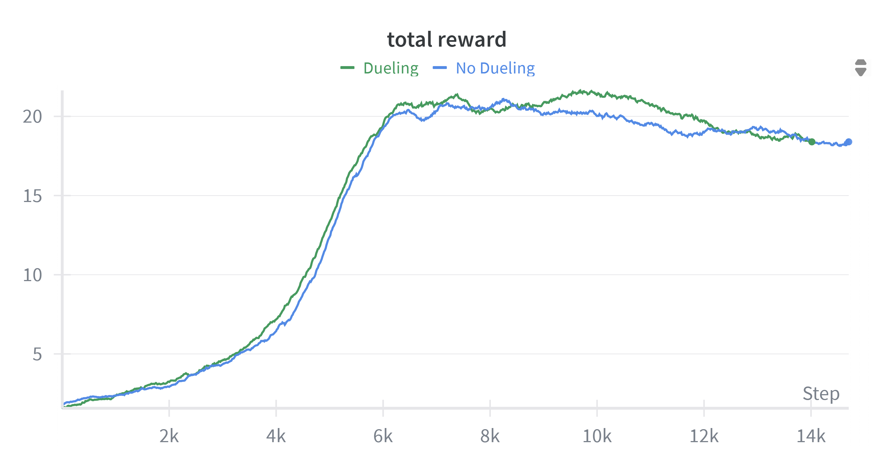
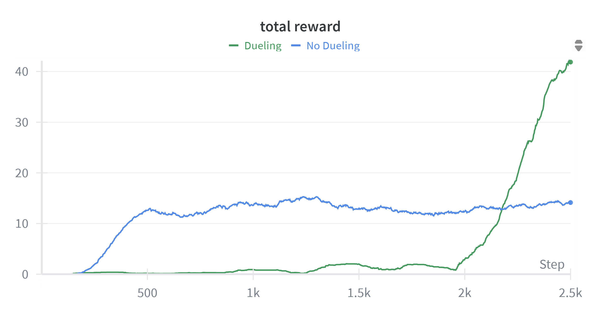

Dueling Double Deep Q-Learning
Recently, I needed to implement a Dueling Double Q-learning Agent and decided to write a short guide that walks through the concepts, motivation and details of this implementation.
The overall problem is about sequential decision making where an agent interacts with an environment with the goal of maximizing expected cumulative reward in the environment. A formal description of this problem (a framework called MDP) includes a state space, an action space, a reward function and a transition function of the environment. Q-learning is one method that helps achieve part of this goal in environments with a discrete action space. The key idea of this algorithm is to capture how good it is to be in a state and take a particular action. This quantity is called the Q-value. Then, the agent selects an action in a given state that maximizes this value.
If $Q(s_t, a_t)$ denotes this value for a state-action pair, a general update using Q-learning for a state-action pair, at time t, is given as follows (Eq 6.8 [1]): $$Q(s_t, a_t) \leftarrow Q(s_t, a_t) + \alpha \left[ r_{t+1} + \gamma \max_{a’} Q\left(s_{t+1}, a’\right) - Q(s_t, a_t) \right]$$ Although one selects an action that maximizes the Q-value, using the maximum of an estimate for an estimate of the maximum value leads to a positive bias. To avoid this problem of maximization bias, another algorithm called the Double Q-Learning with two separate Q-tables (in the tabular case) uses the following update for improved stability (Eq 6.10 [1]):
$$Q_1(s_t, a_t) \leftarrow Q_1(s_t, a_t) + \alpha \left[ r_{t+1} + \gamma Q_2\left(s_{t+1}, \arg\max_{a} Q_1(s_{t+1}, a)\right) - Q_1(s_t, a_t) \right]$$
Q-learning or Double Q-learning are used in the tabular case when the environment is small. But as the size of the environment, state space and action space increases, function approximators like deep networks come in handy to generalize learning over the state and action space. The function approximator usually outputs the Q-value of a state-action pair. This value captures the expected return by learning from a series of episodes of environment interactions. Deep Networks help scale learning to large MDPs. In this article, I discuss the benefits of using a specific architecture called a Dueling Network with Double Deep Q-Learning and show its performance for two Atari games.
For Atari games, the input is processed through a CNN as it consists of frames of visual data. Instead of outputting the Q-value for each state and action pair, the output from CNN is split into two streams. One of these outputs the value of a state, $V(s)$ and the other outputs the advantage of taking an action in that state, $A(s,a)$. The expected value of this advantage function is zero. This can be included by adding this expected value as a regularization to help improve the stability [2].
$$A(s, a) = Q(s, a) - V(s)$$ $$\mathbf{E}_{a \sim \pi(a|s)}[A(s, a)] = 0$$
$$Q(s, a) = V(s) + \left( A(s, a) - \frac{1}{|\mathcal{A}|} \sum_{a’} A(s, a’) \right)$$ The original paper on Dueling Network Architectures [2] suggests the following update for Q-function for an optimal policy. $$Q(s, a) = V(s) + \left( A(s, a) - \max_{a’} A(s, a’) \right)$$ For the implementations as a part of this article, I used the first update for more stable learning.
Implementation Details
I used an initial Sequential Block consisting of three CNN layers followed by two linear layers with 512 hidden number of units for the Value function stream and Q-Value function stream. The results compare Double DQN Agent with a Dueling Double DQN Agent over 6 million environment interactions for Breakout and Enduro.
The figures below show a moving average of 100-episode rewards. The choice of these two games is intentional. Dueling does not impact the performance of the agent in Breakout. This is shown in the first figure. The authors of the original paper on Dueling Networks [2] point out that the benefit of using dueling network compared to using single stream of state-action function increases with large action space. More frequent updates using state-action pairs lead to learning better estimates of the value function as compared to learning state-value function. Since Enduro has a larger action space, this is evident in the performance of Dueling Double DQN Agent in the second image.


References
- Sutton, R. S., & Barto, A. G. (2018). Reinforcement learning: An introduction (2nd ed.). MIT Press.
- Wang, Z., Schaul, T., Hessel, M., Van Hasselt, H., Lanctot, M., & De Freitas, N. (2016). Dueling network architectures for deep reinforcement learning. In International Conference on Machine Learning (ICML) (pp. 1995–2003).
Note : Feel free to reach out if you:
- Get stuck implementing the ideas discussed in this article or have any questions.
- Are a student seeking answers to questions related to research and reinforcement learning - I will do my best to answer them.
Use of generative AI: No part of this article was generated using generative AI tools.